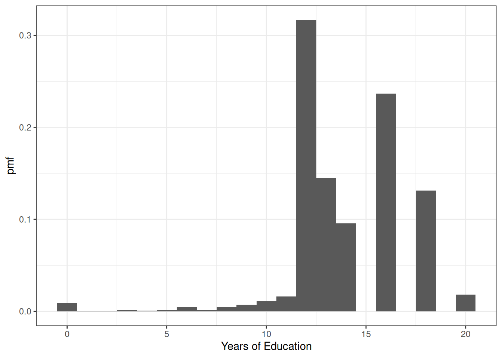
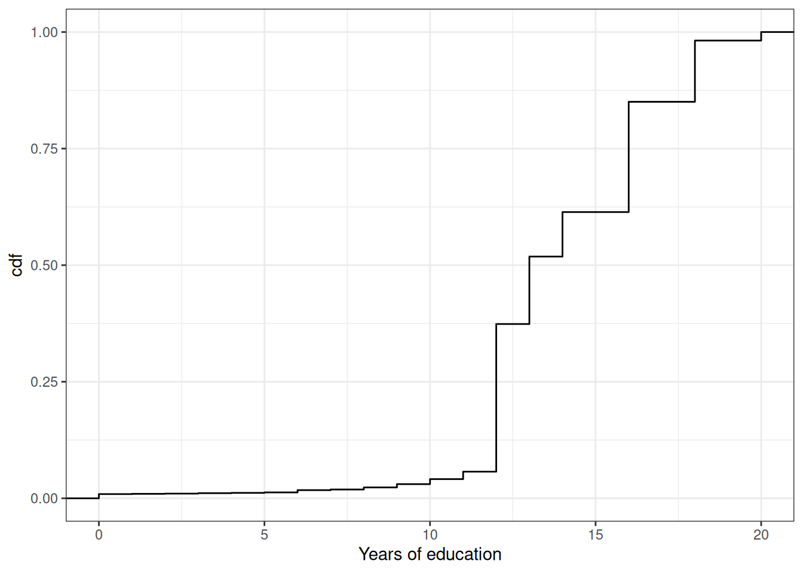
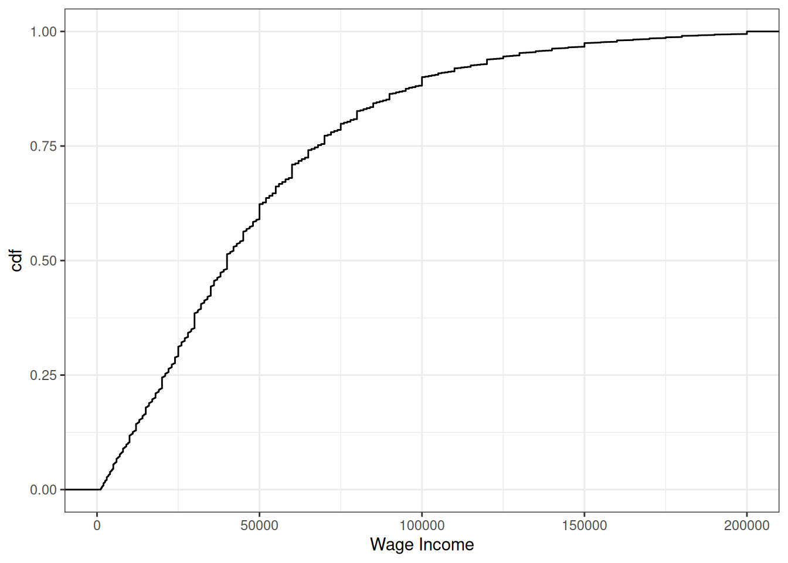
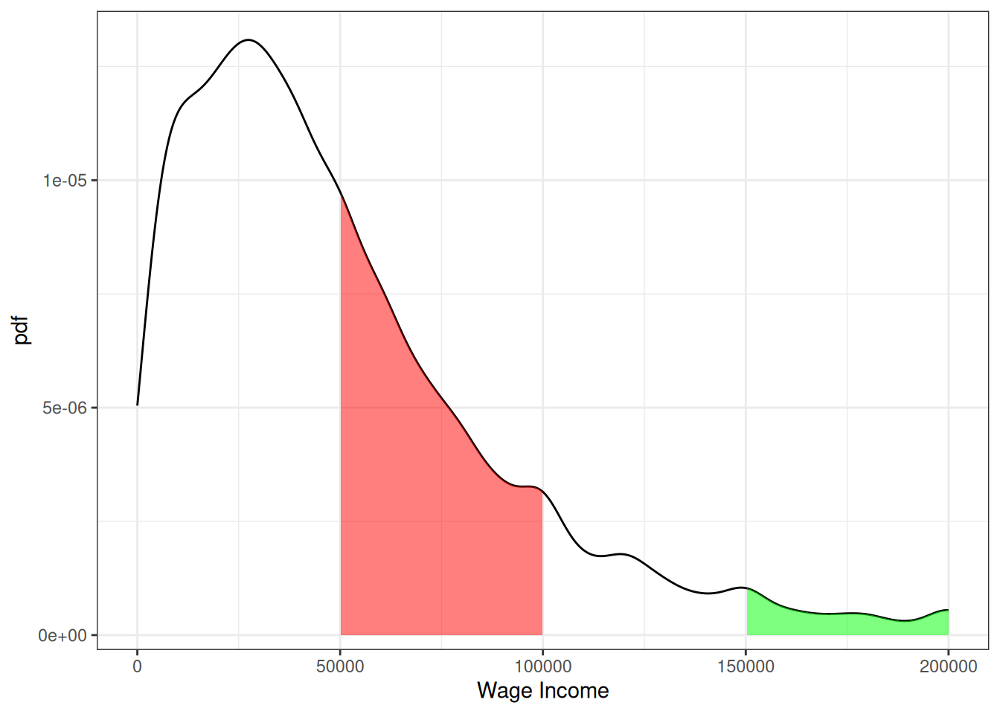

4 Random Variables
\[ \newcommand{\E}{\mathbb{E}} \renewcommand{\P}{\textrm{P}} \let\L\relax \newcommand{\L}{\textrm{L}} %doesn't work in .qmd, place this command at start of qmd file to use it \newcommand{\F}{\textrm{F}} \newcommand{\var}{\textrm{var}} \newcommand{\cov}{\textrm{cov}} \newcommand{\corr}{\textrm{corr}} \newcommand{\Var}{\mathrm{Var}} \newcommand{\Cov}{\mathrm{Cov}} \newcommand{\Corr}{\mathrm{Corr}} \newcommand{\sd}{\mathrm{sd}} \newcommand{\se}{\mathrm{s.e.}} \newcommand{\T}{T} \newcommand{\indicator}[1]{\mathbb{1}\{#1\}} \newcommand\independent{\perp \!\!\! \perp} \newcommand{\N}{\mathcal{N}} \]
This section contains our crash course review of topics in probability. The discussion mostly follows Chapter 2 in the Stock and Watson textbook, and I have cross-listed the relevant sections in the textbook here.
At a very high level, probability is the set of mathematical tools that allow us to think about random events.
Just to be clear, random means uncertain, not 50:50.
A simple example of a random event is the outcome from rolling a die.
Eventually, we will treat data as being random draws from some population. Examples of things that we will treat as random draws are things like a person’s hair color, height, income, etc. We will think of all of these as being random draws because ex ante we don’t know what they will be.
4.1 Data for this chapter
For this chapter, we’ll use data from the U.S. Census Bureau from 2019. It is not quite a full census, but we’ll treat it as the population throughout this chapter.
4.2 Random Variables
SW 2.1
A random variable is a numerical summary of some random event.
Some examples:
Outcome of roll of a die
A person’s height in inches
A firm’s profits in a particular year
Creating a random variable sometime involves “coding” non-numeric outcomes, e.g., setting
hair=1if a person’s hair color is black,hair=2if a person’s hair is blonde, etc.
We’ll generally classify random variables into one of two categories
Discrete — A random variable that takes on discrete values such as 0, 1, 2
Continuous — Takes on a continuum of values
These are broad categories because a lot of random variables in economics sit in between these two.
4.3 pdfs, pmfs, and cdfs
SW 2.1
The distribution of a random variable describes how likely it is take on certain values.
A random variable’s distribution is fully summarized by its:
probability mass function (pmf) if the random variable is discrete
probability density function (pdf) if the random variable is continuous
The pmf is somewhat easier to explain, so let’s start there. For some discrete random variable \(X\), its pmf is given by
\[ f_X(x) = \P(X=x) \] That is, the probability that \(X\) takes on some particular value \(x\).
Example: Suppose that \(X\) denotes the outcome of a roll of a die. Then, \(f_X(1)\) is the probability of rolling a one. And, in particular,
\[ f_X(1) = \P(X=1) = \frac{1}{6} \]
Example: Let’s do a bit more realistic example where we look at the pmf of education in the U.S. Suppose that \(X\) denotes the years of education that a person has. Then, \(f_X(x)\) is the probability that a person has exactly \(x\) years of education. We can set \(x\) to different values and calculate the probabilities of a person having different amounts of education. That’s what we do in the following figure:
There are some things that are perhaps worth pointing out here. The most common amount of education in the U.S. appears to be exactly 12 years — corresponding to graduating from high school; about 32% of the population has that level of education. The next most common number of years of education is 16 — corresponding to graduating from college; about 24% of individuals have this level of education. Other relatively common values of education are 13 years (14% of individuals) and 18 (13% of individuals). About 1% of individuals report 0 years of education. It’s not clear to me whether or not that is actually true or reflects some individuals mis-reporting their education.
Before going back to the pdf, let me describe another way to fully summarize the distribution of a random variable.
- Cumulative distribution function (cdf) - The cdf of some random variable \(X\) is defined as
\[ F_X(x) = \P(X \leq x) \] In words, this cdf is the probability that the random \(X\) takes a value less than or equal to \(x\).
Example: Suppose \(X\) is the outcome of a roll of a die. Then, \(F_X(3) = \P(X \leq 3)\) is the probability of rolling 3 or lower. Thus,
\[ F_X(3) = \P(X \leq 3) = \frac{1}{2} \]
Example: Let’s go back to our example of years of education in the U.S. In this case, \(F_X(x)\) is the fraction of the population that has less than \(x\) years of education. We can calculate this for different values of \(x\). That’s what we do in the following figure:

You can see that the cdf is increasing in the years of education. And there are big “jumps” in the cdf at values of years of education that are common such as 12 and 16.
We’ll go over some properties of pmfs and cdfs momentarily (perhaps you can already deduce some of them from the above figures), but before we do that, we need to go over some (perhaps new) tools.
4.4 Summation operator
It will be convenient for us to have a notation that allows us to add up many numbers/variables at the same time. To do this, we’ll introduce the \(\sum\) operation.
As a simple example, suppose that we have three variables (it doesn’t matter if they are random or not): \(x_1,x_2,x_3\) and we want to add them up. Then, we can write \[ \sum_{i=1}^3 x_i := x_1 + x_2 + x_3 \] Many times, once we have data, there will be n “observations” and we can add them up by: \[ \sum_{i=1}^n x_i = x_1 + x_2 + \cdots + x_n \] Properties:
For any constant \(c\),
\[ \sum_{i=1}^n c = n \cdot c \]
[This is just the definition of multiplication]
For any constant c,
\[ \sum_{i=1}^n c x_i = c \sum_{i=1}^n x_i \]
In words: constants can be moved out of the summation.
We will use the property often throughout the semester.
As an example,
\[ \begin{aligned} \sum_{i=1}^3 7 x_i &= 7x_1 + 7x_2 + 7x_3 \\ &= 7(x_1 + x_2 + x_3) \\ &= 7 \sum_{i=1}^3 x_i \end{aligned} \]
where the first line is just the definition of the summation, the second equality factors out the 7, and the last equality writes the part about adding up the \(x\)’s using summation notation.
4.5 Properties of pmfs and cdfs
Let’s define the support of a random variable \(X\) — this is the set of all possible values that \(X\) can possibly take. We’ll use the notation \(\mathcal{X}\) to denote the support of \(X\).
Example: Suppose \(X\) is the outcome from a roll of a die. Then, the support of \(X\) is given by \(\mathcal{X} = \{1,2,3,4,5,6\}\). In other words, the only possible values for \(X\) are from \(1,\ldots,6\).
Example: Suppose \(X\) is the number of years of education that a person has. The support of \(X\) is given by \(\mathcal{X} = \{0, 1, 2, \ldots, 20\}\). Perhaps I should have chosen a larger number than 20 to be the maximum possible value that \(X\) could take, but you will get the idea — a person’s years of education can be 0 or 1 or 2 or up to some maximum value.
Properties of pmfs
For any \(x\), \(0 \leq f_X(x) \leq 1\)
In words: the probability of \(X\) taking some particular value can’t be less than 0 or greater than 1 (neither of those would make any sense)
\(\sum_{x \in \mathcal{X}} f_X(x) = 1\)
In words: if you add up \(\P(X=x)\) across all possible values that \(X\) could take, they sum to 1.
Properties of cdfs for discrete random variables
For any \(x\), \(0 \leq F_X(x) \leq 1\)
In words: the probability that \(X\) is less than or equal to some particular value \(x\) has to be between 0 and 1.
If \(x_1 < x_2\), then \(F_X(x_1) \leq F_X(x_2)\)
In words: the cdf is increasing in \(x\) (e.g., it will always be the case that \(\P(X \leq 3) \leq \P(X \leq 4)\)).
\(F_X(-\infty)=0\) and \(F_X(\infty)=1\)
In words: if you choose small enough values of \(x\), the probability that \(X\) will be less than that is 0; similar (but opposite) logic applies for big values of \(x\).
Connection between pmfs and cdfs
\(F_X(x) = \displaystyle \sum_{z \in \mathcal{X} \\ z \leq x} f_X(z)\)
In words: you can “recover” the cdf from the pmf by adding up the pmf across all possible values that the random variable could take that are less than or equal to \(x\). This will be clearer with an example:
Example: Suppose that \(X\) is the outcome of a roll of a die. Earlier we showed that \(F_X(3) = 1/2\). We can calculate this by
\[ \begin{aligned} F_X(3) &= \sum_{\substack{z \in \mathcal{X} \\ z \leq 3}} f_X(z) \\ &= \sum_{z=1}^3 f_X(z) \\ &= f_X(1) + f_X(2) + f_X(3) \\ &= \frac{1}{6} + \frac{1}{6} + \frac{1}{6} \\ &= \frac{1}{2} \end{aligned} \]
4.6 Continuous Random Variables
SW 2.1
For continuous random variables, you can define the cdf in exactly the same way as we did for discrete random variables. That is, if \(X\) is a continuous random variable,
\[ F_X(x) = \P(X \leq x) \]
Example: Suppose \(X\) denotes an individual’s yearly wage income. The cdf of \(X\) looks like

From the figure, we can see that about 24% of working individuals in the U.S. each $20,000 or less per year, 61% of working individuals earn $50,000 or less, and 88% earn $100,000 or less.
It’s trickier to define an analogue to the pmf for a continuous random variable (in fact, this is the main reason for our separate treatment of discrete and continuous random variables). For example, suppose \(X\) denotes the length of a phone conversation. As long as we can measure time finely enough, the probability that a phone conversation lasts exactly 1189.23975381 seconds (this is about 20 minutes) is 0. Instead, for a continuous random variable, we’ll define its probability density function (pdf) as the derivative of its cdf, that is,
\[ f_X(x) := \frac{d \, F_X(x)}{d \, x} \] Recall that the slope of the cdf will be larger in places where \(F_X(x)\) is “steeper”.
Regions where the pdf is larger correspond to more likely values of \(X\) — in this sense the pdf is very similar to the pmf.
We can also write the cdf as an integral over the pdf. That is,
\[ F_X(x) = \int_{-\infty}^x f_X(z) \, dz \] Integration is roughly the continuous version of a summation — thus, this expression is very similar to the expression above for the cdf in terms of the pmf when \(X\) is discrete.
More properties of cdfs
\(\P(X > x) = 1 - \P(X \leq x) = 1-F_X(x)\)
In words, if you want to calculate the probability that \(X\) is greater than some particular value \(x\), you can do that by calculating \(1-F_X(x)\).
\(\P(a \leq X \leq b) = F_X(b) - F_X(a)\)
In words: you can also calculate the probability that \(X\) falls in some range using the cdf.
Example: Suppose \(X\) denotes an individual’s yearly wage income. The pdf of \(X\) looks like

From the figure, we can see that the most common values of yearly income are around $25-30,000 per year. Notice that this corresponds to the steepest part of the cdf from the previous figure. The right tail of the distribution is also long. This means that, while incomes of $150,000+ are not common, there are some individuals who have incomes that high.
Moreover, we can use the properties of pdfs/cdfs above to calculate some specific probabilities. In particular, we can calculating probabilities by calculating integrals (i.e., regions under the curve) / relating the pdf to the cdf. First, the red region above corresponds to the probability of a person’s income being between $50,000 and $100,000. This is given by \(F(100,000) - F(50000)\). We can compute this in R using the ecdf function. In particular,
incwage_cdf <- ecdf(us_data$incwage)
round(incwage_cdf(100000) - incwage_cdf(50000),3)[1] 0.27The green region in the figure is the probability of a person’s income being above $150,000. Using the above properties of cdfs, we can calculate it as \(1-F(150000)\) which is
round(1-incwage_cdf(150000), 3)[1] 0.0524.7 Multiple Random Variables
SW 2.3
Most often in economics, we want to consider two (or more) random variables jointly rather than just a single random variable. For example, mean income is interesting, but mean income as a function of education is more interesting.
When there is more than one random variable, you can define joint pmfs, joint pdfs, and joint cdfs.
Let’s quickly go over these for the case where \(X\) and \(Y\) are two discrete random variables.
Joint pmf: \(f_{X,Y}(x,y) := \P(X=x, Y=y)\)
Joint cdf: \(F_{X,Y}(x,y) := \P(X \leq x, Y \leq y)\)
Conditional pmf: \(f_{Y|X}(y|x) := \P(Y=y | X=x)\)
Properties
We use the notation that \(\mathcal{X}\) denotes the support of \(X\) and \(\mathcal{Y}\) denotes the support of \(Y\).
\(0 \leq f_{X,Y}(x,y) \leq 1\) for all \(x,y\)
In words: the probability of \(X\) and \(Y\) taking any particular values can’t be less than 0 or greater than 1 (because these are probabilities)
\(\displaystyle \sum_{x \in \mathcal{X}} \sum_{y \in \mathcal{Y}} f_{X,Y}(x,y) = 1\)
In words: If you add up \(\P(X=x, Y=y)\) across all possible values of \(x\) and \(y\), they sum up to 1 (again, this is just a property of probabilities)
If you know the joint pmf, then you can recover the marginal pmf, that is,
\[ f_Y(y) = \sum_{x \in \mathcal{X}} f_{X,Y}(x,y) \]
This amounts to just adding up the joint pmf across all values of \(x\) while holding \(y\) fixed. A main takeaway from this property is the following: if you know the joint pmf of two random variables, then it implies that you know the pmf of each random variable individuals. Thus, if you know the joint pmf, it implies that you know more than if you only knew the marginal pmfs.
Example: Suppose that you roll a die, and based on this roll, you create the following random variables.
\[ X = \begin{cases} 0 \quad \textrm{if roll is 3 or lower} \\ 1 \quad \textrm{if roll is greater than 3} \end{cases} \qquad Y = \begin{cases} 0 \quad \textrm{if roll is odd} \\ 1 \quad \textrm{if roll is even} \end{cases} \]
Let’s consider what values \(X\) and \(Y\) take for different rolls:
| roll | X | Y |
|---|---|---|
| 1 | 0 | 0 |
| 2 | 0 | 1 |
| 3 | 0 | 0 |
| 4 | 1 | 1 |
| 5 | 1 | 0 |
| 6 | 1 | 1 |
Thus,
\[ \begin{aligned} f_{X,Y}(0, 0) = \frac{2}{6} \qquad \qquad f_{X,Y}(0,1) = \frac{1}{6} \\ f_{X,Y}(1, 0) = \frac{1}{6} \qquad \qquad f_{X,Y}(1,1) = \frac{2}{6} \end{aligned} \] and you can immediately see that the first two properties hold here. For the third property, suppose that we want to calculate \(f_Y(1)\) (i.e., the probability that we roll an even number). The property says that we can calculate it \[ \begin{aligned} f_Y(1) &= \sum_{x=0}^1 f_{X,Y}(x,1) \\ &= f_{X,Y}(0,1) + f_{X,Y}(1,1) = \frac{1}{6} + \frac{2}{6} = \frac{1}{2} \end{aligned} \] which, as we know, is the right answer.
\(X\) and \(Y\) are said to be independent if \(f_{Y|X}(y|x) = f_Y(y)\). In other words, if knowing the value of \(X\) doesn’t provide any information about the distribution \(Y\).